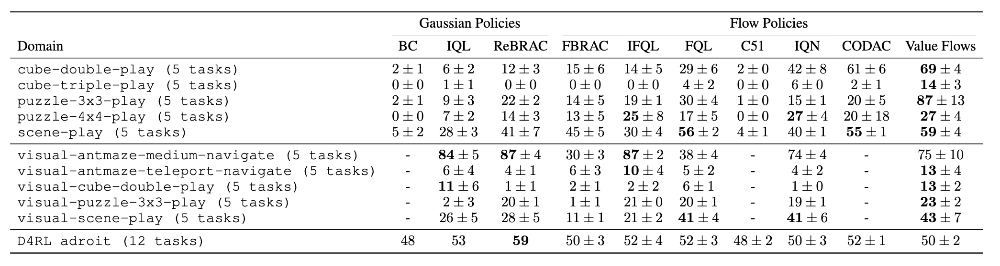
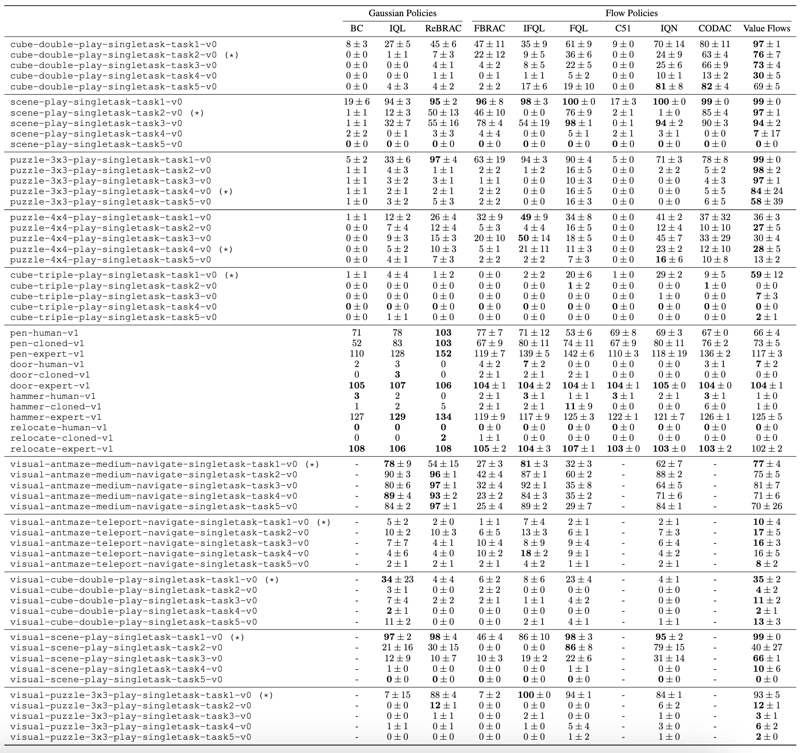
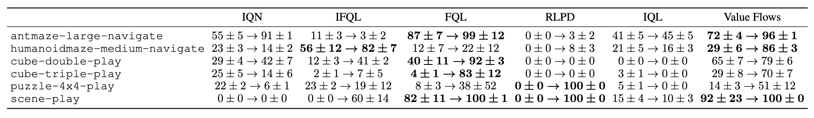

Experiments
Offline RL

Click to see the full table (62 tasks)

Offline RL results averaged over 8 seeds on 62 continous control tasks from OGBench and D4RL.
- Value flows achieves the best or near-best performance on 9 out of 11 domains.
- On those more challenging state-based tasks, Value Flows achieves 1.6× higher success rates than the best performing baseline.
Offline-to-online RL


Offline-to-online RL results averaged over 8 seeds on 6 continous control tasks from OGBench.
- Value Flows demonstrates strong performance in online settings and achieves the best performance averaged over all the environments.
- Value Flows can be used without any modifications to the vector field objective.